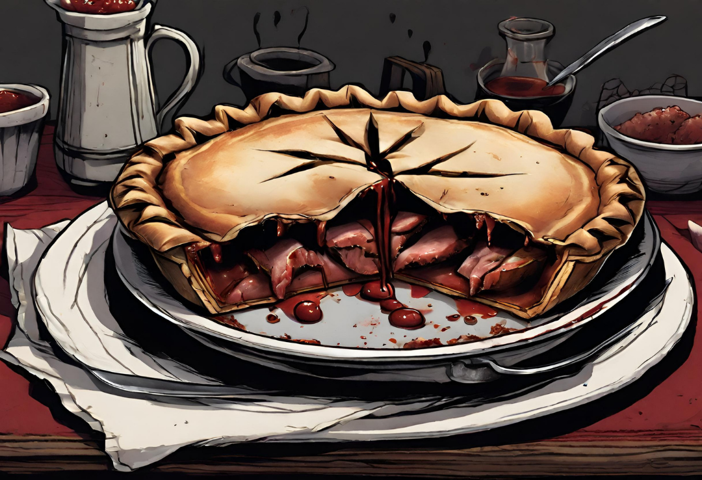

Sweeney Todd's Sinister Meat Pies

Description
The Sinister Meat Pie, an homage to the haunting tale of Sweeney Todd, is a culinary masterpiece shrouded in dark
mystique. Its filling, a blend of humanely sourced minced meat, blood-red wine, and a medley of finely chopped
onions, garlic, and mushrooms, weaves an intricate dance of savory malevolence. Encased in a pastry born from
flour sifted through shadows and butter from the gloomiest abyss, each sinister bite unveils a tantalizing
fusion of textures—a tender union of meat within a crust that whispers with a subtle crunch.
Served with a side of Mrs. Lovett's Special Gravy, this diabolical creation promises an unforgettable gastronomic
experience. As one indulges in the Sinister Meat Pie, the flavors unfold like a sinister symphony, leaving an
eerie aftertaste that lingers, akin to the haunting echoes of a ghostly waltz. It's a culinary journey that
transcends the ordinary, inviting daring souls to savor a taste both unsettling and undeniably delicious.
Ingredients
For the filling
- 1 lb humanely sourced, high-quality minced meat (substitute with beef or lamb for a less sinister version)
- 1 large onion, finely chopped
- 2 cloves garlic, minced
- 1 cup mushrooms, finely diced
- 1/2 cup red wine (optional, for a rich flavor)
- 2 tablespoons olive oil
- 1 teaspoon thyme
- 1 teaspoon rosemary
- Salt and pepper to taste
For the Crust
- 2 1/2 cups all-purpose flour
- 1 cup unsalted butter, chilled and cubed
- 1/2 cup cold water
- 1 teaspoon salt
Steps
Filling:
- In a large skillet, heat the olive oil over medium heat. Add the chopped onions and garlic, sautéing until
translucent.
- Add the minced meat and cook until browned, breaking it apart with a spoon.
- Stir in the diced mushrooms and cook until they release their moisture and become golden.
- Pour in the red wine (if using) to deglaze the pan, scraping up any browned bits from the bottom.
- Add thyme, rosemary, salt, and pepper. Simmer until the mixture has a rich, savory flavor. Set aside to
cool.
Crust:
- In a large mixing bowl, combine the flour and salt. Add the chilled, cubed butter.
- Use a pastry cutter or your fingers to work the butter into the flour until the mixture resembles coarse
crumbs.
- Gradually add cold water, one tablespoon at a time, and mix until the dough comes together.
- Divide the dough in half. Roll out one half to line the bottom of your pie dish and the other for the top
crust.
Assembly:
- Preheat your oven to 375°F (190°C).
- Line a pie dish with the rolled-out dough for the bottom crust.
- Spoon the cooled meat filling into the pie dish, spreading it evenly.
- Place the second rolled-out dough on top, sealing the edges by crimping with a fork or your fingers.
- Cut a few slits in the top crust to allow steam to escape during baking.
- Bake in the preheated oven for 40-45 minutes or until the crust is golden brown.
- Allow the meat pie to cool slightly before serving.
Serving suggestions:
Serve these Meat Pies with a side of "Mrs. Lovett's Special Gravy" (a dark, mysterious sauce of your choice). Be
sure to share these pies with friends, or perhaps unsuspecting neighbors!